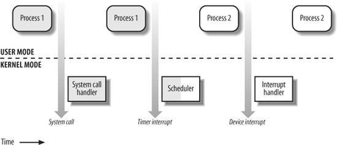
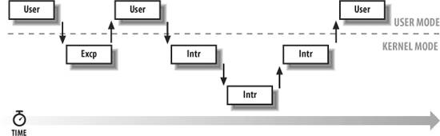
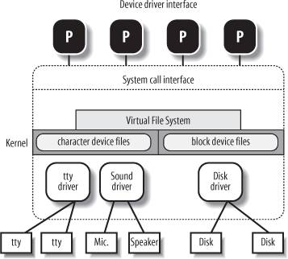

{% include JB/setup %}
{% raw %}
<div>


<a name="understandlk-CHP-1-SECT-6"></a>
<h3 class="docSection1Title">1.6. An Overview of Unix Kernels</h3><a name="IDX-CHP-1-0207"></a>
<a name="IDX-CHP-1-0208"></a>
<a name="IDX-CHP-1-0209"></a>
<a name="IDX-CHP-1-0210"></a>
<a name="IDX-CHP-1-0211"></a>
<p class="docText1">Unix kernels provide an execution environment in which applications may run. Therefore, the kernel must implement a set of services and corresponding interfaces. Applications use those interfaces and do not usually interact directly with hardware resources.</p>
<a name="understandlk-CHP-1-SECT-6.1"></a>
<h4 class="docSection2Title">1.6.1. The Process/Kernel Model</h4><a name="IDX-CHP-1-0212"></a>
<a name="IDX-CHP-1-0213"></a>
<a name="IDX-CHP-1-0214"></a>
<p class="docText1">As already mentioned, a CPU can run in either User Mode<a name="IDX-CHP-1-0215"></a> 
 or Kernel Mode<a name="IDX-CHP-1-0216"></a> 
. Actually, some CPUs can have more than two execution states. For instance, the 80 x 86 microprocessors have four different execution states. But all standard Unix kernels use only Kernel Mode and User Mode.</p>
<p class="docText1">When a program is executed in User Mode, it cannot directly access the kernel data structures or the kernel programs. When an application executes in Kernel Mode, however, these restrictions no longer apply. Each CPU model provides special instructions to switch from User Mode to Kernel Mode and vice versa. A program usually executes in User Mode and switches to Kernel Mode only when requesting a service provided by the kernel. When the kernel has satisfied the program's request, it puts the program back in User Mode.</p>
<p class="docText1">Processes are dynamic entities that usually have a limited life span within the system. The task of creating, eliminating, and synchronizing the existing processes<a name="IDX-CHP-1-0217"></a> 
 is delegated to a group of routines in the kernel.</p>
<p class="docText1">The kernel itself is not a process but a process manager. The process/kernel model assumes that processes that require a kernel service use specific programming constructs called <span class="docEmphasis">system calls</span><a name="IDX-CHP-1-0218"></a> 
. Each system call sets up the group of parameters that identifies the process request and then executes the hardware-dependent CPU instruction to switch from User Mode to Kernel Mode.</p>
<p class="docText1">Besides user processes, Unix systems include a few privileged processes called <span class="docEmphasis">kernel threads</span><a name="IDX-CHP-1-0219"></a> 
 with the following characteristics:</p>
<ul class="calibre11"><li class="calibre12"><p class="docText1">They run in Kernel Mode in the kernel address space.</p></li><li class="calibre12"><p class="docText1">They do not interact with users, and thus do not require terminal devices.</p></li><li class="calibre12"><p class="docText1">They are usually created during system startup and remain alive until the system is shut down.</p></li></ul>
<p class="docText1">On a uniprocessor system, only one process is running at a time, and it may run either in User or in Kernel Mode. If it runs in Kernel Mode, the processor is executing some kernel routine. <a class="pcalibre5 docLink pcalibre1" href="#understandlk-CHP-1-FIG-2">Figure 1-2</a> illustrates examples of transitions between User and Kernel Mode. Process 1 in User Mode issues a system call, after which the process switches to Kernel Mode, and the system call is serviced. Process 1 then resumes execution in User Mode until a timer interrupt occurs, and the scheduler is activated in Kernel Mode. A process switch takes place, and Process 2 starts its execution in User Mode until a hardware device raises an interrupt. As a consequence of the interrupt, Process 2 switches to Kernel Mode and services the interrupt.</p>
<a name="understandlk-CHP-1-FIG-2"></a><p class="calibre14"><center class="calibre8">
<h5 class="docFigureTitle">Figure 1-2. Transitions between User and Kernel Mode</h5>
</center></p><br class="calibre7"/>
<p class="docText1">Unix kernels do much more than handle system calls; in fact, kernel routines can be activated in several ways:</p>
<ul class="calibre11"><li class="calibre12"><p class="docText1">A process invokes a system call.</p></li><li class="calibre12"><p class="docText1">The CPU executing the process signals an <span class="docEmphasis">exception</span>, which is an unusual condition such as an invalid instruction. The kernel handles the exception on behalf of the process that caused it.</p></li><li class="calibre12"><p class="docText1">A peripheral device issues an <span class="docEmphasis">interrupt</span> signal to the CPU to notify it of an event such as a request for attention, a status change, or the completion of an I/O operation. Each interrupt signal is dealt by a kernel program called an <span class="docEmphasis">interrupt handler</span>. Because peripheral devices operate asynchronously with respect to the CPU, interrupts occur at unpredictable times.</p></li><li class="calibre12"><p class="docText1">A kernel thread is executed. Because it runs in Kernel Mode, the corresponding program must be considered part of the kernel.</p></li></ul>
<a name="understandlk-CHP-1-SECT-6.2"></a>
<h4 class="docSection2Title">1.6.2. Process Implementation</h4><a name="IDX-CHP-1-0220"></a>
<p class="docText1">To let the kernel manage processes, each process is represented by a <span class="docEmphasis">process descriptor</span> that includes information about the current state of the process.</p>
<p class="docText1">When the kernel stops the execution of a process, it saves the current contents of several processor registers in the process descriptor. These include:</p>
<ul class="calibre11"><li class="calibre12"><p class="docText1">The program counter (PC) and stack pointer (SP) registers</p></li><li class="calibre12"><p class="docText1">The general purpose registers</p></li><li class="calibre12"><p class="docText1">The floating point registers</p></li><li class="calibre12"><p class="docText1">The processor control registers (Processor Status Word) containing information about the CPU state</p></li><li class="calibre12"><p class="docText1">The memory management registers used to keep track of the RAM accessed by the process</p></li></ul>
<p class="docText1">When the kernel decides to resume executing a process, it uses the proper process descriptor fields to load the CPU registers. Because the stored value of the program counter points to the instruction following the last instruction executed, the process resumes execution at the point where it was stopped.</p>
<p class="docText1">When a process is not executing on the CPU, it is waiting for some event. Unix kernels distinguish many wait states, which are usually implemented by queues of process descriptors<a name="IDX-CHP-1-0221"></a> 
; each (possibly empty) queue corresponds to the set of processes waiting for a specific event.</p>
<a name="understandlk-CHP-1-SECT-6.3"></a>
<h4 class="docSection2Title">1.6.3. Reentrant Kernels</h4>
<p class="docText1">All Unix kernels are <span class="docEmphasis">reentrant</span>. This means that several processes may be executing in Kernel Mode at the same time. Of course, on uniprocessor systems, only one process can progress, but many can be blocked in Kernel Mode when waiting for the CPU or the completion of some I/O operation. For instance, after issuing a read to a disk on behalf of a process, the kernel lets the disk controller handle it and resumes executing other processes. An interrupt notifies the kernel when the device has satisfied the read, so the former process can resume the execution.</p>
<p class="docText1">One way to provide reentrancy is to write functions so that they modify only local variables and do not alter global data structures. Such functions are called <span class="docEmphasis">reentrant functions</span><a name="IDX-CHP-1-0222"></a> 
. But a reentrant kernel is not limited only to such reentrant functions (although that is how some real-time kernels are implemented). Instead, the kernel can include nonreentrant functions and use locking mechanisms to ensure that only one process can execute a nonreentrant function at a time.</p>
<p class="docText1">If a hardware interrupt occurs, a reentrant kernel is able to suspend the current running process even if that process is in Kernel Mode. This capability is very important, because it improves the throughput of the device controllers that issue interrupts. Once a device has issued an interrupt, it waits until the CPU acknowledges it. If the kernel is able to answer quickly, the device controller will be able to perform other tasks while the CPU handles the interrupt.</p>
<p class="docText1">Now let's look at kernel reentrancy and its impact on the organization of the kernel. A <span class="docEmphasis">kernel control path</span> denotes the sequence of instructions executed by the kernel to handle a system call, an exception, or an interrupt.</p>
<p class="docText1">In the simplest case, the CPU executes a kernel control path sequentially from the first instruction to the last. When one of the following events occurs, however, the CPU interleaves the kernel control paths<a name="IDX-CHP-1-0223"></a> 
:</p>
<ul class="calibre11"><li class="calibre12"><p class="docText1">A process executing in User Mode invokes a system call, and the corresponding kernel control path verifies that the request cannot be satisfied immediately; it then invokes the scheduler to select a new process to run. As a result, a process switch occurs. The first kernel control path is left unfinished, and the CPU resumes the execution of some other kernel control path. In this case, the two control paths are executed on behalf of two different processes.</p></li><li class="calibre12"><p class="docText1">The CPU detects an exceptionfor example, access to a page not present in RAMwhile running a kernel control path. The first control path is suspended, and the CPU starts the execution of a suitable procedure. In our example, this type of procedure can allocate a new page for the process and read its contents from disk. When the procedure terminates, the first control path can be resumed. In this case, the two control paths are executed on behalf of the same process.</p></li><li class="calibre12"><p class="docText1">A hardware interrupt occurs while the CPU is running a kernel control path with the interrupts enabled. The first kernel control path is left unfinished, and the CPU starts processing another kernel control path to handle the interrupt. The first kernel control path resumes when the interrupt handler terminates. In this case, the two kernel control paths run in the execution context of the same process, and the total system CPU time is accounted to it. However, the interrupt handler doesn't necessarily operate on behalf of the process.</p></li><li class="calibre12"><p class="docText1">An interrupt occurs while the CPU is running with kernel preemption enabled, and a higher priority process is runnable. In this case, the first kernel control path is left unfinished, and the CPU resumes executing another kernel control path on behalf of the higher priority process. This occurs only if the kernel has been compiled with kernel preemption support.</p></li></ul>
<p class="docText1"><a class="pcalibre5 docLink pcalibre1" href="#understandlk-CHP-1-FIG-3">Figure 1-3</a> illustrates a few examples of noninterleaved and interleaved kernel control paths. Three different CPU states are considered:</p>
<ul class="calibre11"><li class="calibre12"><p class="docText1">Running a process in User Mode (User)</p></li><li class="calibre12"><p class="docText1">Running an exception or a system call handler (Excp)</p></li><li class="calibre12"><p class="docText1">Running an interrupt handler (Intr)</p><a name="understandlk-CHP-1-FIG-3"></a><p class="calibre14"><center class="calibre8">
<h5 class="docFigureTitle">Figure 1-3. Interleaving of kernel control paths</h5>
</center></p></li></ul>
<a name="understandlk-CHP-1-SECT-6.4"></a>
<h4 class="docSection2Title">1.6.4. Process Address Space</h4><a name="IDX-CHP-1-0224"></a>
<a name="IDX-CHP-1-0225"></a>
<p class="docText1">Each process runs in its private address space. A process running in User Mode refers to private stack, data, and code areas. When running in Kernel Mode, the process addresses the kernel data and code areas and uses another private stack.</p>
<p class="docText1">Because the kernel is reentrant, several kernel control pathseach related to a different processmay be executed in turn. In this case, each kernel control path refers to its own private kernel stack.</p>
<p class="docText1">While it appears to each process that it has access to a private address space, there are times when part of the address space is shared among processes. In some cases, this sharing is explicitly requested by processes; in others, it is done automatically by the kernel to reduce memory usage.</p>
<p class="docText1">If the same program, say an editor, is needed simultaneously by several users, the program is loaded into memory only once, and its instructions can be shared by all of the users who need it. Its data, of course, must not be shared, because each user will have separate data. This kind of shared address space is done automatically by the kernel to save memory.</p>
<p class="docText1">Processes also can share parts of their address space as a kind of interprocess communication, using the "shared memory" technique introduced in System V<a name="IDX-CHP-1-0226"></a> 
 and supported by Linux.</p>
<p class="docText1">Finally, Linux supports the <tt class="calibre25">mmap( )</tt><a name="IDX-CHP-1-0227"></a> 
 system call, which allows part of a file or the information stored on a block device to be mapped into a part of a process address space. Memory mapping can provide an alternative to normal reads and writes for transferring data. If the same file is shared by several processes, its memory mapping is included in the address space of each of the processes that share it.</p>
<a name="understandlk-CHP-1-SECT-6.5"></a>
<h4 class="docSection2Title">1.6.5. Synchronization and Critical Regions</h4>
<p class="docText1">Implementing a reentrant kernel requires the use of synchronization<a name="IDX-CHP-1-0228"></a> 
. If a kernel control path is suspended while acting on a kernel data structure, no other kernel control path should be allowed to act on the same data structure unless it has been reset to a consistent state. Otherwise, the interaction of the two control paths could corrupt the stored information.</p>
<p class="docText1">For example, suppose a global variable V contains the number of available items of some system resource. The first kernel control path, A, reads the variable and determines that there is just one available item. At this point, another kernel control path, B, is activated and reads the same variable, which still contains the value 1. Thus, B decreases V and starts using the resource item. Then A resumes the execution; because it has already read the value of V, it assumes that it can decrease V and take the resource item, which B already uses. As a final result, V contains -1, and two kernel control paths use the same resource item with potentially disastrous effects.</p>
<p class="docText1">When the outcome of a computation depends on how two or more processes are scheduled, the code is incorrect. We say that there is a <span class="docEmphasis">race condition</span>.</p>
<p class="docText1">In general, safe access to a global variable is ensured by using <span class="docEmphasis">atomic operations</span><a name="IDX-CHP-1-0229"></a> 
. In the previous example, data corruption is not possible if the two control paths read and decrease V with a single, noninterruptible operation. However, kernels contain many data structures that cannot be accessed with a single operation. For example, it usually isn't possible to remove an element from a linked list with a single operation, because the kernel needs to access at least two pointers at once. Any section of code that should be finished by each process that begins it before another process can enter it is called a <span class="docEmphasis">critical region</span>.<sup class="docFootnote"><a class="pcalibre5 docLink pcalibre1" href="#understandlk-CHP-1-FN9">[*]</a></sup></p><blockquote class="calibre22"><p class="docFootnote1"><sup class="calibre24"><a name="understandlk-CHP-1-FN9">[*]</a></sup> Synchronization problems have been fully described in other works; we refer the interested reader to books on the Unix operating systems (see the <a class="pcalibre5 docLink pcalibre1" href="understandlk-BIBL-1.html#understandlk-BIBL-1">Bibliography</a>).</p></blockquote>
<p class="docText1">These problems occur not only among kernel control paths but also among processes sharing common data. Several synchronization techniques have been adopted. The following section concentrates on how to synchronize kernel control paths.</p>
<a name="understandlk-CHP-1-SECT-6.5.1"></a>
<h5 class="docSection3Title">1.6.5.1. Kernel preemption disabling</h5><a name="IDX-CHP-1-0230"></a>
<a name="IDX-CHP-1-0231"></a>
<a name="IDX-CHP-1-0232"></a>
<a name="IDX-CHP-1-0233"></a>
<p class="docText1">To provide a drastically simple solution to synchronization problems, some traditional Unix kernels are nonpreemptive: when a process executes in Kernel Mode, it cannot be arbitrarily suspended and substituted with another process. Therefore, on a uniprocessor system, all kernel data structures that are not updated by interrupts or exception handlers<a name="IDX-CHP-1-0234"></a> 
 are safe for the kernel to access.</p>
<p class="docText1">Of course, a process in Kernel Mode can voluntarily relinquish the CPU, but in this case, it must ensure that all data structures are left in a consistent state. Moreover, when it resumes its execution, it must recheck the value of any previously accessed data structures that could be changed.</p>
<p class="docText1">A synchronization mechanism applicable to preemptive kernels consists of disabling<a name="IDX-CHP-1-0235"></a> 
 kernel preemption before entering a critical region and reenabling it right after leaving the region.</p>
<p class="docText1">Nonpreemptability is not enough for multiprocessor systems, because two kernel control paths running on different CPUs can concurrently access the same data structure.</p>
<a name="understandlk-CHP-1-SECT-6.5.2"></a>
<h5 class="docSection3Title">1.6.5.2. Interrupt disabling</h5><a name="IDX-CHP-1-0236"></a>
<a name="IDX-CHP-1-0237"></a>
<a name="IDX-CHP-1-0238"></a>
<a name="IDX-CHP-1-0239"></a>
<p class="docText1">Another synchronization mechanism for uniprocessor systems consists of disabling all hardware interrupts before entering a critical region and reenabling them right after leaving it. This mechanism, while simple, is far from optimal. If the critical region is large, interrupts can remain disabled for a relatively long time, potentially causing all hardware activities to freeze.</p>
<p class="docText1">Moreover, on a multiprocessor system, disabling interrupts on the local CPU is not sufficient, and other synchronization techniques must be used.</p>
<a name="understandlk-CHP-1-SECT-6.5.3"></a>
<h5 class="docSection3Title">1.6.5.3. Semaphores</h5>
<p class="docText1">A widely used mechanism, effective in both uniprocessor and multiprocessor systems, relies on the use of <span class="docEmphasis">semaphores</span><a name="IDX-CHP-1-0240"></a> 
. A semaphore is simply a counter associated with a data structure; it is checked by all kernel threads before they try to access the data structure. Each semaphore may be viewed as an object composed of:</p>
<ul class="calibre11"><li class="calibre12"><p class="docText1">An integer variable</p></li><li class="calibre12"><p class="docText1">A list of waiting processes</p></li><li class="calibre12"><p class="docText1">Two atomic methods: <tt class="calibre25">down( )</tt> and <tt class="calibre25">up( )</tt></p></li></ul>
<p class="docText1">The <tt class="calibre25">down( )</tt> method decreases the value of the semaphore. If the new value is less than 0, the method adds the running process to the semaphore list and then blocks (i.e., invokes the scheduler). The <tt class="calibre25">up( )</tt> method increases the value of the semaphore and, if its new value is greater than or equal to 0, reactivates one or more processes in the semaphore list.</p>
<p class="docText1">Each data structure to be protected has its own semaphore, which is initialized to 1. When a kernel control path wishes to access the data structure, it executes the <tt class="calibre25">down( )</tt> method on the proper semaphore. If the value of the new semaphore isn't negative, access to the data structure is granted. Otherwise, the process that is executing the kernel control path is added to the semaphore list and blocked. When another process executes the <tt class="calibre25">up( )</tt> method on that semaphore, one of the processes in the semaphore list is allowed to proceed.</p>
<a name="understandlk-CHP-1-SECT-6.5.4"></a>
<h5 class="docSection3Title">1.6.5.4. Spin locks</h5>
<p class="docText1">In multiprocessor systems, semaphores are not always the best solution to the synchronization problems. Some kernel data structures should be protected from being concurrently accessed by kernel control paths that run on different CPUs. In this case, if the time required to update the data structure is short, a semaphore could be very inefficient. To check a semaphore, the kernel must insert a process in the semaphore list and then suspend it. Because both operations are relatively expensive, in the time it takes to complete them, the other kernel control path could have already released the semaphore.</p>
<p class="docText1">In these cases, multiprocessor operating systems use <span class="docEmphasis">spin locks</span><a name="IDX-CHP-1-0241"></a> 
. A spin lock is very similar to a semaphore, but it has no process list; when a process finds the lock closed by another process, it "spins" around repeatedly, executing a tight instruction loop until the lock becomes open.</p>
<p class="docText1">Of course, spin locks are useless in a uniprocessor environment. When a kernel control path tries to access a locked data structure, it starts an endless loop. Therefore, the kernel control path that is updating the protected data structure would not have a chance to continue the execution and release the spin lock. The final result would be that the system hangs.</p>
<a name="understandlk-CHP-1-SECT-6.5.5"></a>
<h5 class="docSection3Title">1.6.5.5. Avoiding deadlocks</h5><a name="IDX-CHP-1-0242"></a>
<a name="IDX-CHP-1-0243"></a>
<a name="IDX-CHP-1-0244"></a>
<a name="IDX-CHP-1-0245"></a>
<p class="docText1">Processes or kernel control paths that synchronize with other control paths may easily enter a <span class="docEmphasis">deadlock</span> state. The simplest case of deadlock occurs when process <span class="docEmphasis">p1</span> gains access to data structure <span class="docEmphasis">a</span> and process <span class="docEmphasis">p2</span> gains access to <span class="docEmphasis">b</span>, but <span class="docEmphasis">p1</span> then waits for <span class="docEmphasis">b</span> and <span class="docEmphasis">p2</span> waits for <span class="docEmphasis">a</span>. Other more complex cyclic waits among groups of processes also may occur. Of course, a deadlock condition causes a complete freeze of the affected processes or kernel control paths.</p>
<p class="docText1">As far as kernel design is concerned, deadlocks become an issue when the number of kernel locks used is high. In this case, it may be quite difficult to ensure that no deadlock state will ever be reached for all possible ways to interleave kernel control paths. Several operating systems, including Linux, avoid this problem by requesting locks in a predefined order.</p>
<a name="understandlk-CHP-1-SECT-6.6"></a>
<h4 class="docSection2Title">1.6.6. Signals and Interprocess Communication</h4><a name="IDX-CHP-1-0246"></a>
<a name="IDX-CHP-1-0247"></a>
<p class="docText1">Unix <span class="docEmphasis">signals</span><a name="IDX-CHP-1-0248"></a> 
 provide a mechanism for notifying processes of system events. Each event has its own signal number, which is usually referred to by a symbolic constant such as <tt class="calibre25">SIGTERM</tt>. There are two kinds of system events:</p>
<dl class="docText1"><dt class="calibre7"><br class="calibre7"/><p class="calibre14"><span class="docPubcolor"><span class="docEmphasis">Asynchronous notifications</span></span></p></dt>
<dd class="calibre20"><p class="docList">For instance, a user can send the interrupt signal <tt class="calibre25">SIGINT</tt> to a foreground process by pressing the interrupt keycode (usually Ctrl-C) at the terminal.</p></dd><dt class="calibre7"><br class="calibre7"/><p class="calibre14"><span class="docPubcolor"><span class="docEmphasis">Synchronous notifications</span></span></p></dt>
<dd class="calibre20"><p class="docList">For instance, the kernel sends the signal <tt class="calibre25">SIGSEGV</tt> to a process when it accesses a memory location at an invalid address.</p></dd></dl>
<p class="docText1">The POSIX standard defines about 20 different signals, 2 of which are user-definable and may be used as a primitive mechanism for communication and synchronization among processes in User Mode. In general, a process may react to a signal delivery in two possible ways:</p>
<ul class="calibre11"><li class="calibre12"><p class="docText1">Ignore the signal.</p></li><li class="calibre12"><p class="docText1">Asynchronously execute a specified procedure (the signal handler).</p></li></ul>
<p class="docText1">If the process does not specify one of these alternatives, the kernel performs a <span class="docEmphasis">default action</span> that depends on the signal number. The five possible default actions<a name="IDX-CHP-1-0249"></a> 
 are:</p>
<ul class="calibre11"><li class="calibre12"><p class="docText1">Terminate the process.</p></li><li class="calibre12"><p class="docText1">Write the execution context and the contents of the address space in a file (<span class="docEmphasis">core dump</span>) and terminate the process.</p></li><li class="calibre12"><p class="docText1">Ignore the signal.</p></li><li class="calibre12"><p class="docText1">Suspend the process.</p></li><li class="calibre12"><p class="docText1">Resume the process's execution, if it was stopped.</p></li></ul>
<p class="docText1">Kernel signal handling is rather elaborate, because the POSIX semantics allows processes to temporarily block signals. Moreover, the <tt class="calibre25">SIGKILL</tt> and <tt class="calibre25">SIGSTOP</tt> signals cannot be directly handled by the process or ignored.</p>
<p class="docText1">AT&amp;T's Unix System V<a name="IDX-CHP-1-0250"></a> 
 introduced other kinds of interprocess communication among processes in User Mode, which have been adopted by many Unix kernels: <span class="docEmphasis">semaphores</span><a name="IDX-CHP-1-0251"></a> 
, <span class="docEmphasis">message queues</span><a name="IDX-CHP-1-0252"></a> 
, and <span class="docEmphasis">shared memory</span><a name="IDX-CHP-1-0253"></a> 
. They are collectively known as <span class="docEmphasis">System V IPC</span>.</p>
<p class="docText1">The kernel implements these constructs as <span class="docEmphasis">IPC resources</span>. A process acquires a resource by invoking a <tt class="calibre25">shmget( )</tt><a name="IDX-CHP-1-0254"></a> 
, <tt class="calibre25">semget( )</tt><a name="IDX-CHP-1-0255"></a> 
, or <tt class="calibre25">msgget( )</tt><a name="IDX-CHP-1-0256"></a> 
 system call. Just like files, IPC resources are persistent: they must be explicitly deallocated by the creator process, by the current owner, or by a superuser process.</p>
<p class="docText1">Semaphores are similar to those described in the section "<a class="pcalibre5 docLink pcalibre1" href="#understandlk-CHP-1-SECT-6.5">Synchronization and Critical Regions</a>," earlier in this chapter, except that they are reserved for processes in User Mode. Message queues allow processes to exchange messages by using the <tt class="calibre25">msgsnd( )</tt><a name="IDX-CHP-1-0257"></a> 
 and <tt class="calibre25">msgrcv( )</tt><a name="IDX-CHP-1-0258"></a> 
 system calls, which insert a message into a specific message queue and extract a message from it, respectively.</p>
<p class="docText1">The POSIX standard (IEEE Std 1003.1-2001) defines an IPC mechanism based on message queues, which is usually known as <span class="docEmphasis">POSIX message queues</span><a name="IDX-CHP-1-0259"></a> 
. They are similar to the System V IPC's message queues, but they have a much simpler file-based interface to the applications.</p>
<p class="docText1">Shared memory provides the fastest way for processes to exchange and share data. A process starts by issuing a <tt class="calibre25">shmget( )</tt> system call to create a new shared memory having a required size. After obtaining the IPC resource identifier, the process invokes the <tt class="calibre25">shmat( )</tt><a name="IDX-CHP-1-0260"></a> 
 system call, which returns the starting address of the new region within the process address space. When the process wishes to detach the shared memory from its address space, it invokes the <tt class="calibre25">shmdt( )</tt><a name="IDX-CHP-1-0261"></a> 
 system call. The implementation of shared memory depends on how the kernel implements process address spaces.</p>
<a name="understandlk-CHP-1-SECT-6.7"></a>
<h4 class="docSection2Title">1.6.7. Process Management</h4><a name="IDX-CHP-1-0262"></a>
<a name="IDX-CHP-1-0263"></a>
<a name="IDX-CHP-1-0264"></a>
<a name="IDX-CHP-1-0265"></a>
<a name="IDX-CHP-1-0266"></a>
<a name="IDX-CHP-1-0267"></a>
<p class="docText1">Unix makes a neat distinction between the process and the program it is executing. To that end, the <tt class="calibre25">fork( )</tt><a name="IDX-CHP-1-0268"></a> 
 and <tt class="calibre25">_exit( )</tt><a name="IDX-CHP-1-0269"></a> 
 system calls are used respectively to create a new process and to terminate it, while an <tt class="calibre25">exec( )</tt>-like system call is invoked to load a new program. After such a system call is executed, the process resumes execution with a brand new address space containing the loaded program.</p>
<p class="docText1">The process that invokes a <tt class="calibre25">fork( )</tt> is the <span class="docEmphasis">parent</span>, while the new process is its <span class="docEmphasis">child</span>. Parents and children can find one another because the data structure describing each process includes a pointer to its immediate parent and pointers to all its immediate children.</p>
<p class="docText1">A naive implementation of the <tt class="calibre25">fork( )</tt> would require both the parent's data and the parent's code to be duplicated and the copies assigned to the child. This would be quite time consuming. Current kernels that can rely on hardware paging units follow the Copy-On-Write approach, which defers page duplication until the last moment (i.e., until the parent or the child is required to write into a page). We shall describe how Linux implements this technique in the section "<a class="pcalibre5 docLink pcalibre1" href="understandlk-CHP-9-SECT-4.html#understandlk-CHP-9-SECT-4.4">Copy On Write</a>" in <a class="pcalibre5 docLink pcalibre1" href="understandlk-CHP-9.html#understandlk-CHP-9">Chapter 9</a>.</p>
<p class="docText1">The <tt class="calibre25">_exit( )</tt> system call terminates a process. The kernel handles this system call by releasing the resources owned by the process and sending the parent process a <tt class="calibre25">SIGCHLD</tt> signal, which is ignored by default.</p>
<a name="understandlk-CHP-1-SECT-6.7.1"></a>
<h5 class="docSection3Title">1.6.7.1. Zombie processes</h5>
<p class="docText1">How can a parent process inquire about termination of its children? The <tt class="calibre25">wait4( )</tt><a name="IDX-CHP-1-0270"></a> 
 system call allows a process to wait until one of its children terminates; it returns the process ID (PID) of the terminated child.</p>
<p class="docText1">When executing this system call, the kernel checks whether a child has already terminated. A special <span class="docEmphasis">zombie</span> process state is introduced to represent terminated processes: a process remains in that state until its parent process executes a <tt class="calibre25">wait4( )</tt> system call on it. The system call handler extracts data about resource usage from the process descriptor fields; the process descriptor may be released once the data is collected. If no child process has already terminated when the <tt class="calibre25">wait4( )</tt> system call is executed, the kernel usually puts the process in a wait state until a child terminates.</p>
<p class="docText1">Many kernels also implement a <tt class="calibre25">waitpid( )</tt><a name="IDX-CHP-1-0271"></a> 
 system call, which allows a process to wait for a specific child process. Other variants of <tt class="calibre25">wait4( )</tt> system calls are also quite common.</p>
<p class="docText1">It's good practice for the kernel to keep around information on a child process until the parent issues its <tt class="calibre25">wait4( )</tt> call, but suppose the parent process terminates without issuing that call? The information takes up valuable memory slots that could be used to serve living processes. For example, many shells allow the user to start a command in the background and then log out. The process that is running the command shell terminates, but its children continue their execution.</p>
<p class="docText1">The solution lies in a special system process called <span class="docEmphasis">init</span>, which is created during system initialization. When a process terminates, the kernel changes the appropriate process descriptor pointers of all the existing children of the terminated process to make them become children of <span class="docEmphasis">init</span>. This process monitors the execution of all its children and routinely issues <tt class="calibre25">wait4( )</tt> system calls, whose side effect is to get rid of all orphaned zombies.</p>
<a name="understandlk-CHP-1-SECT-6.7.2"></a>
<h5 class="docSection3Title">1.6.7.2. Process groups and login sessions</h5><a name="IDX-CHP-1-0272"></a>
<a name="IDX-CHP-1-0273"></a>
<a name="IDX-CHP-1-0274"></a>
<p class="docText1">Modern Unix operating systems introduce the notion of <span class="docEmphasis">process groups</span><a name="IDX-CHP-1-0275"></a> 
 to represent a "job" abstraction. For example, in order to execute the command line:</p><pre class="calibre27">
    $ ls | sort | more</pre><br class="calibre7"/>
<p class="docText1">a shell that supports process groups, such as <tt class="calibre25">bash</tt>, creates a new group for the three processes corresponding to <tt class="calibre25">ls</tt>, <tt class="calibre25">sort</tt>, and <tt class="calibre25">more</tt>. In this way, the shell acts on the three processes as if they were a single entity (the job, to be precise). Each process descriptor includes a field containing the <span class="docEmphasis">process group ID</span><a name="IDX-CHP-1-0276"></a> 
. Each group of processes may have a <span class="docEmphasis">group leader</span>, which is the process whose PID coincides with the process group ID. A newly created process is initially inserted into the process group of its parent.</p>
<p class="docText1">Modern Unix kernels also introduce <span class="docEmphasis">login sessions</span>. Informally, a login session contains all processes that are descendants of the process that has started a working session on a specific terminalusually, the first command shell process created for the user. All processes in a process group must be in the same login session. A login session may have several process groups active simultaneously; one of these process groups is always in the foreground, which means that it has access to the terminal. The other active process groups are in the background. When a background process tries to access the terminal, it receives a <tt class="calibre25">SIGTTIN</tt> or <tt class="calibre25">SIGTTOUT</tt> signal. In many command shells, the internal commands <tt class="calibre25">bg</tt> and <tt class="calibre25">fg</tt> can be used to put a process group in either the background or the foreground.</p>
<a name="understandlk-CHP-1-SECT-6.8"></a>
<h4 class="docSection2Title">1.6.8. Memory Management</h4>
<p class="docText1">Memory management is by far the most complex activity in a Unix kernel. More than a third of this book is dedicated just to describing how Linux handles memory management. This section illustrates some of the main issues related to memory management.</p>
<a name="understandlk-CHP-1-SECT-6.8.1"></a>
<h5 class="docSection3Title">1.6.8.1. Virtual memory</h5>
<p class="docText1">All recent Unix systems provide a useful abstraction called <span class="docEmphasis">virtual memory</span><a name="IDX-CHP-1-0277"></a> 
. Virtual memory acts as a logical layer between the application memory requests and the hardware Memory Management Unit<a name="IDX-CHP-1-0278"></a> 
 (MMU). Virtual memory has many purposes and advantages:</p>
<ul class="calibre11"><li class="calibre12"><p class="docText1">Several processes can be executed concurrently.</p></li><li class="calibre12"><p class="docText1">It is possible to run applications whose memory needs are larger than the available physical memory.</p></li><li class="calibre12"><p class="docText1">Processes can execute a program whose code is only partially loaded in memory.</p></li><li class="calibre12"><p class="docText1">Each process is allowed to access a subset of the available physical memory.</p></li><li class="calibre12"><p class="docText1">Processes can share a single memory image of a library or program.</p></li><li class="calibre12"><p class="docText1">Programs can be relocatable  that is, they can be placed anywhere in physical memory.</p></li><li class="calibre12"><p class="docText1">Programmers can write machine-independent code, because they do not need to be concerned about physical memory organization.</p></li></ul>
<p class="docText1">The main ingredient of a virtual memory subsystem is the notion of <span class="docEmphasis">virtual address space</span>. The set of memory references that a process can use is different from physical memory addresses. When a process uses a virtual address,<sup class="docFootnote"><a class="pcalibre5 docLink pcalibre1" href="#understandlk-CHP-1-FN10">[*]</a></sup> the kernel and the MMU cooperate to find the actual physical location of the requested memory item.</p><blockquote class="calibre22"><p class="docFootnote1"><sup class="calibre24"><a name="understandlk-CHP-1-FN10">[*]</a></sup> These addresses have different nomenclatures, depending on the computer architecture. As we'll see in <a class="pcalibre5 docLink pcalibre1" href="understandlk-CHP-2.html#understandlk-CHP-2">Chapter 2</a>, Intel manuals refer to them as "logical addresses."</p></blockquote>
<p class="docText1">Today's CPUs include hardware circuits that automatically translate the virtual addresses into physical ones. To that end, the available RAM is partitioned into page frames<a name="IDX-CHP-1-0279"></a> 
typically 4 or 8 KB in lengthand a set of Page Tables is introduced to specify how virtual addresses correspond to physical addresses. These circuits make memory allocation simpler, because a request for a block of contiguous virtual addresses can be satisfied by allocating a group of page frames having noncontiguous physical addresses.</p>
<a name="understandlk-CHP-1-SECT-6.8.2"></a>
<h5 class="docSection3Title">1.6.8.2. Random access memory usage</h5><a name="IDX-CHP-1-0280"></a>
<a name="IDX-CHP-1-0281"></a>
<p class="docText1">All Unix operating systems clearly distinguish between two portions of the random access memory (RAM). A few megabytes are dedicated to storing the kernel image (i.e., the kernel code and the kernel static data structures). The remaining portion of RAM is usually handled by the virtual memory system and is used in three possible ways:</p>
<ul class="calibre11"><li class="calibre12"><p class="docText1">To satisfy kernel requests for buffers, descriptors, and other dynamic kernel data structures</p></li><li class="calibre12"><p class="docText1">To satisfy process requests for generic memory areas and for memory mapping of files</p></li><li class="calibre12"><p class="docText1">To get better performance from disks and other buffered devices by means of caches</p></li></ul>
<p class="docText1">Each request type is valuable. On the other hand, because the available RAM is limited, some balancing among request types must be done, particularly when little available memory is left. Moreover, when some critical threshold of available memory is reached and a page-frame-reclaiming algorithm is invoked to free additional memory, which are the page frames most suitable for reclaiming? As we will see in <a class="pcalibre5 docLink pcalibre1" href="understandlk-CHP-17.html#understandlk-CHP-17">Chapter 17</a>, there is no simple answer to this question and very little support from theory. The only available solution lies in developing carefully tuned empirical algorithms.</p>
<p class="docText1">One major problem that must be solved by the virtual memory system is <span class="docEmphasis">memory fragmentation</span><a name="IDX-CHP-1-0282"></a> 
. Ideally, a memory request should fail only when the number of free page frames is too small. However, the kernel is often forced to use physically contiguous memory areas. Hence the memory request could fail even if there is enough memory available, but it is not available as one contiguous chunk.</p>
<a name="understandlk-CHP-1-SECT-6.8.3"></a>
<h5 class="docSection3Title">1.6.8.3. Kernel Memory Allocator</h5><a name="IDX-CHP-1-0283"></a>
<p class="docText1">The <span class="docEmphasis">Kernel Memory Allocator</span> (<span class="docEmphasis">KMA</span>) is a subsystem that tries to satisfy the requests for memory areas from all parts of the system. Some of these requests come from other kernel subsystems needing memory for kernel use, and some requests come via system calls from user programs to increase their processes' address spaces. A good KMA should have the following features:</p>
<ul class="calibre11"><li class="calibre12"><p class="docText1">It must be fast. Actually, this is the most crucial attribute, because it is invoked by all kernel subsystems (including the interrupt handlers).</p></li><li class="calibre12"><p class="docText1">It should minimize the amount of wasted memory.</p></li><li class="calibre12"><p class="docText1">It should try to reduce the memory fragmentation problem.</p></li><li class="calibre12"><p class="docText1">It should be able to cooperate with the other memory management subsystems to borrow and release page frames from them.</p></li></ul>
<p class="docText1">Several proposed KMAs, which are based on a variety of different algorithmic techniques, include:</p>
<ul class="calibre11"><li class="calibre12"><p class="docText1">Resource map allocator</p></li><li class="calibre12"><p class="docText1">Power-of-two free lists</p></li><li class="calibre12"><p class="docText1">McKusick-Karels allocator</p></li><li class="calibre12"><p class="docText1">Buddy system</p></li><li class="calibre12"><p class="docText1">Mach's Zone allocator</p></li><li class="calibre12"><p class="docText1">Dynix allocator</p></li><li class="calibre12"><p class="docText1">Solaris<a name="IDX-CHP-1-0284"></a> 
's Slab allocator</p></li></ul>
<p class="docText1">As we will see in <a class="pcalibre5 docLink pcalibre1" href="understandlk-CHP-8.html#understandlk-CHP-8">Chapter 8</a>, Linux's KMA uses a Slab allocator on top of a buddy system.</p>
<a name="understandlk-CHP-1-SECT-6.8.4"></a>
<h5 class="docSection3Title">1.6.8.4. Process virtual address space handling</h5>
<p class="docText1">The address space of a process contains all the virtual memory addresses that the process is allowed to reference. The kernel usually stores a process virtual address space as a list of <span class="docEmphasis">memory area descriptors</span><a name="IDX-CHP-1-0285"></a> 
. For example, when a process starts the execution of some program via an <tt class="calibre25">exec( )</tt>-like system call, the kernel assigns to the process a virtual address space that comprises memory areas for:</p>
<ul class="calibre11"><li class="calibre12"><p class="docText1">The executable code of the program</p></li><li class="calibre12"><p class="docText1">The initialized data of the program</p></li><li class="calibre12"><p class="docText1">The uninitialized data of the program</p></li><li class="calibre12"><p class="docText1">The initial program stack (i.e., the User Mode stack)</p></li><li class="calibre12"><p class="docText1">The executable code and data of needed shared libraries</p></li><li class="calibre12"><p class="docText1">The heap (the memory dynamically requested by the program)</p></li></ul>
<p class="docText1">All recent Unix operating systems adopt a memory allocation strategy called <span class="docEmphasis">demand paging</span><a name="IDX-CHP-1-0286"></a> 
. With demand paging, a process can start program execution with none of its pages in physical memory. As it accesses a nonpresent page, the MMU generates an exception; the exception handler finds the affected memory region, allocates a free page, and initializes it with the appropriate data. In a similar fashion, when the process dynamically requires memory by using <tt class="calibre25">malloc( )</tt>, or the <tt class="calibre25">brk( )</tt><a name="IDX-CHP-1-0287"></a> 
 system call (which is invoked internally by <tt class="calibre25">malloc( )</tt>), the kernel just updates the size of the heap memory region of the process. A page frame is assigned to the process only when it generates an exception by trying to refer its virtual memory addresses.</p>
<p class="docText1">Virtual address spaces also allow other efficient strategies, such as the Copy On Write strategy mentioned earlier. For example, when a new process is created, the kernel just assigns the parent's page frames to the child address space, but marks them read-only. An exception is raised as soon the parent or the child tries to modify the contents of a page. The exception handler assigns a new page frame to the affected process and initializes it with the contents of the original page.</p>
<a name="understandlk-CHP-1-SECT-6.8.5"></a>
<h5 class="docSection3Title">1.6.8.5. Caching</h5><a name="IDX-CHP-1-0288"></a>
<a name="IDX-CHP-1-0289"></a>
<a name="IDX-CHP-1-0290"></a>
<a name="IDX-CHP-1-0291"></a>
<a name="IDX-CHP-1-0292"></a>
<p class="docText1">A good part of the available physical memory is used as cache for hard disks and other block devices. This is because hard drives are very slow: a disk access requires several milliseconds, which is a very long time compared with the RAM access time. Therefore, disks are often the bottleneck in system performance. As a general rule, one of the policies already implemented in the earliest Unix system is to defer writing to disk as long as possible. As a result, data read previously from disk and no longer used by any process continue to stay in RAM.</p>
<p class="docText1">This strategy is based on the fact that there is a good chance that new processes will require data read from or written to disk by processes that no longer exist. When a process asks to access a disk, the kernel checks first whether the required data are in the cache. Each time this happens (a cache hit), the kernel is able to service the process request without accessing the disk.</p>
<p class="docText1">The <tt class="calibre25">sync( )</tt><a name="IDX-CHP-1-0293"></a> 
 system call forces disk synchronization by writing all of the "dirty" buffers (i.e., all the buffers whose contents differ from that of the corresponding disk blocks) into disk. To avoid data loss, all operating systems take care to periodically write dirty buffers back to disk.</p>
<a name="understandlk-CHP-1-SECT-6.9"></a>
<h4 class="docSection2Title">1.6.9. Device Drivers</h4>
<p class="docText1">The kernel interacts with I/O devices by means of <span class="docEmphasis">device drivers</span><a name="IDX-CHP-1-0294"></a> 
. Device drivers are included in the kernel and consist of data structures and functions that control one or more devices, such as hard disks, keyboards, mouses, monitors, network interfaces, and devices connected to an SCSI bus. Each driver interacts with the remaining part of the kernel (even with other drivers) through a specific interface. This approach has the following advantages:</p>
<ul class="calibre11"><li class="calibre12"><p class="docText1">Device-specific code can be encapsulated in a specific module.</p></li><li class="calibre12"><p class="docText1">Vendors can add new devices without knowing the kernel source code; only the interface specifications must be known.</p></li><li class="calibre12"><p class="docText1">The kernel deals with all devices in a uniform way and accesses them through the same interface.</p></li><li class="calibre12"><p class="docText1">It is possible to write a device driver as a module that can be dynamically loaded in the kernel without requiring the system to be rebooted. It is also possible to dynamically unload a module that is no longer needed, therefore minimizing the size of the kernel image stored in RAM.</p></li></ul>
<p class="docText1"><a class="pcalibre5 docLink pcalibre1" href="#understandlk-CHP-1-FIG-4">Figure 1-4</a> illustrates how device drivers interface with the rest of the kernel and with the processes.</p>
<a name="understandlk-CHP-1-FIG-4"></a><p class="calibre14"><center class="calibre8">
<h5 class="docFigureTitle">Figure 1-4. Device driver interface</h5>
</center></p><br class="calibre7"/>
<p class="docText1">Some user programs (P) wish to operate on hardware devices. They make requests to the kernel using the usual file-related system calls and the device files normally found in the <i class="docEmphasis">/dev</i> directory. Actually, the device files are the user-visible portion of the device driver interface. Each device file refers to a specific device driver, which is invoked by the kernel to perform the requested operation on the hardware component.</p>
<p class="docText1">At the time Unix was introduced, graphical terminals were uncommon and expensive, so only alphanumeric terminals were handled directly by Unix kernels. When graphical terminals became widespread, ad hoc applications such as the X Window System<a name="IDX-CHP-1-0295"></a> 
 were introduced that ran as standard processes and accessed the I/O ports of the graphics interface and the RAM video area directly. Some recent Unix kernels, such as Linux 2.6, provide an abstraction for the frame buffer of the graphic card and allow application software to access them without needing to know anything about the I/O ports of the graphics interface (see the section "<a class="pcalibre5 docLink pcalibre1" href="understandlk-CHP-13-SECT-4.html#understandlk-CHP-13-SECT-4.6">Levels of Kernel Support</a>" in <a class="pcalibre5 docLink pcalibre1" href="understandlk-CHP-13.html#understandlk-CHP-13">Chapter 13</a>.)</p>
<a href="31071535.html"></a>
<br class="calibre7"/>

</div>

{% endraw %}

